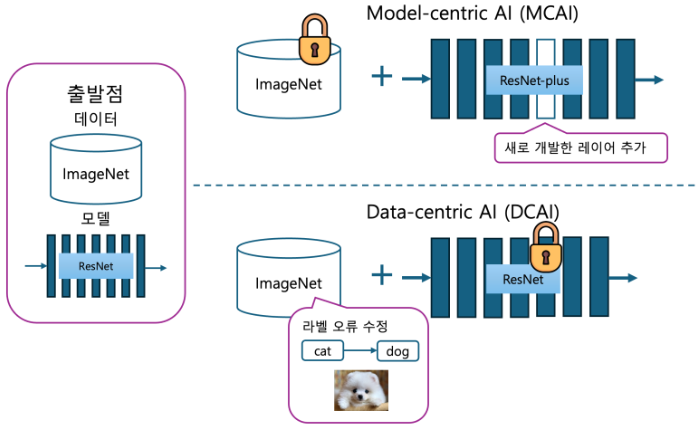
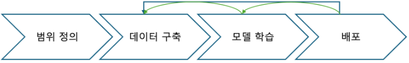

Data-centric AI
-
AI 시스템의 구축을 성공적으로 이끌기 위해 필요한 데이터를 체계적으로 설계개발하는 학문
-
단순히 데이터의 양이나 질을 말하는 것이 아니라,
Systematically Engineering에 주목Systematically Engineering: Data를 쳬계적으로 설계하고 개선하는 접근법- 기존 데이터 관련 기술은 개인의 경험, 직관, 암묵적 지식에 의존하는 경우가 많았음
-
목표
- 데이터 설계개발개선을 위한 체계적인 공학적 접근법을 확립해 재현성을 높이고자 함
-
기술 요소
-
데이터 중심 및 Annotation 효율화
- 효과적인 데이터 수집 및 labeling 기법 개발
-
데이터의 정량적 평가
- 데이터 품질 및 특성을 수치화해 평가하는 방법론 도입
-
데이터 문제점 발굴
- 평가 결과를 바탕으로 데이터의 양, 질 등 문제점 식별
-
문제 해결 방안 제시
- 식별된 문제점을 해결하기 위한 개선 전력 수립
-
운용 시 데이터 개선 지표 모니터링
- 실시간 운용 환경에서 데이터 개선에 필요한 지표를 지속적으로 모니터링
-
Model-centric AI & Data-Centric AI
-
AI 시스템을 단순화하면, 이라고 볼 수 있음
-
지난 수십 년 동안, 표준 Dataset을 벤치마크로 사용해, 모델의 성능을 반복적으로 개선해왔으며, AI 기술은 비약적인 발전을 이룸
- 이 접근법을
Model-centric AI이라고 부름

(예시 이미지. ImageNet, ResNet은 단순 예시) - 이 접근법을
-
Model-centric AI: 고정된 Dataset에서 모델을 지속적으로 변경하며 성능을 개선하는 접근 -
오랜 시간 동안 AI 개발은
Model-centric AI가 주류였음- 그러나 이런 방식은 Dataset에 과하게 의존하게 되어, Dataset 고유의 문제에 Overfitting하는 한계가 있으며, 실제 응용에서는 성능 개선이 어려운 문제가 지적되고 있음
- 데이터 관련 문제를 간과해, train, val, 배포 등 이후 단계에 영향을 미치고 기술 부채가 되는
Data Cascade로 이어질 수 있음- 기술 부채 : 빠른 출시나 개발을 위한 미흡한 설계로, 추후 시간과 비용이 더 드는 것
-
저자(Andrew Ng)는 3가지 Task에 대해
Model-centric AI와Data-centric AI비교-
Model-centric AI: 데이터는 고정한 채로 모델 개선 -
Data-centric AI: 모델은 고정한 채로 데이터 개선 -
철제 제품의 결함 검출, 태양열 패널 검사, 표면 검사 등에 대해
Data-centric AI가 더 큰 성능 향상을 달성함
-
-
Model-centric AI와Data-centric AI는 상호 배타적이지 않음- Task의 특성이나 프로젝트 단계에 따라 적절히 조합해 활용해야 함
Label Consitency
-
Label이
Data-centric AI일관성의 핵심 -
Annotation: data에 label을 부여하는 작업 -
Annotation마다 서로 다른 label을 선택하면, 일관성이 깨짐- train 시, noise가 발생해 원래 data의 pattern과 noise에 overfitting되어 일반화 성능이 떨어지게 됨
-
이 문제는 개별 엔지니어의 경험이나 우연에 의해 발견되고 해결되었음
Data-centric AI는 이를 체계적으로 해결하고자 함
-
해결 방안
-
다수의 Annotation 활용
- 동일한 data에 대해 여러 Annotator가 label을 부여하도록 해 편차를 확인
- Annotator : data에 labeling을 부여하는 작업자
-
일관성의 정량적 평가
- Annotator 간
Label Consistency를 수치화해 평가
- Annotator 간
-
규칙 재검토
Label Consistency가 낮은 data 조사- 필요 시 Annotation 규칙 개선
-
반복적 개선
- data 전체의 Constistency가 확보될 때까지 반복
-
Dataset Size & Data Quality
-
Dataset size가 작은 경우, 품질이 훨씬 중요해짐
ex) 이미지 500장 중, 12%의 label에 noise가 포함되었다고 가정
Andrew Ng에 따르면 Shannon의 정보 이론을 적용할 때,
12%의 label을 수정하는 ‘noise sample 수정 방식’과
dataset의 크기를 2배로 늘리는 ‘dataset의 확장’은 동일한 효과를 가짐
→ 데이터 품질 개선이 더 효과적 -
Andrew Ng의 프로젝트에서, BBox의 Consistency를 높였을 때 정확도가 약 10% 향상했음
- 동일한 수준의 정확도 향상을 위해선, 약 3배의 Dataset이 필요했음
-
Longtail Data의 경우에도 Data Quality 개선이 중요한 문제
- Longtail Data : 자주 등장하는 data는 많고, 드물게 등장하는 data는 매우 적은 Data가 불균형하게 분포된 data
MLOps (ML Operations)
-
AI 시스템 개발부터 배포, 운영까지 체계적으로 수행하기 위한 분야

- AI 시스템 개발 LifeCycle
- MLOPs는 전반에 걸쳐 고품질 데이터를 보증해야함
- AI 시스템 개발 LifeCycle
-
3가지 단계에 관여함
- 데이터 구축
- 어떻게 일관성있는 데이터를 정의하고 수집할 것인가?
- 모델 학습
- 전처리를 통해 어떻게 효율적으로 모델 성능을 개선할 것인가?
- 배포
- Concept Drift와 Data Drift를 감지하고, 적절한 데이터를 feedback할 것인가?
- Concept Drift : 시간에 따라 input data와 label 사이 관계가 변하는 현상
- Data Drift : 시간이 지나면서 input data의 특징이나 비율이 달라지는 현상
- Concept Drift와 Data Drift를 감지하고, 적절한 데이터를 feedback할 것인가?
- 데이터 구축
-
해당 Dataset의 품질을 지속적으로 개선하는 프로세스를 내재화하는 것이 필수적임
- 이를 MLOPs에서 수행함으로써, 개발 흐름 확립
Big Data → Good Data
-
데이터 양 자체보다, Quality에 초점을 맞춘 Good Data 구축으로 사고를 전환하면, AI의 활용 범위를 넓힐 수 있음
-
Good Data의 특징
- Consistency : label 정의의 모호함이 없음
- Important case의 Coverage : 실제 문제의 핵심 상황들을 Dataset이 충분히 포함하고 있는지 여부
- Feedback 기반 개선 : 운영 중 수집된 데이터를 통해 지속적 품질 개선
- 적절한 Data Size : 문제 해결에 필요한 최적의 Data Size를 유지